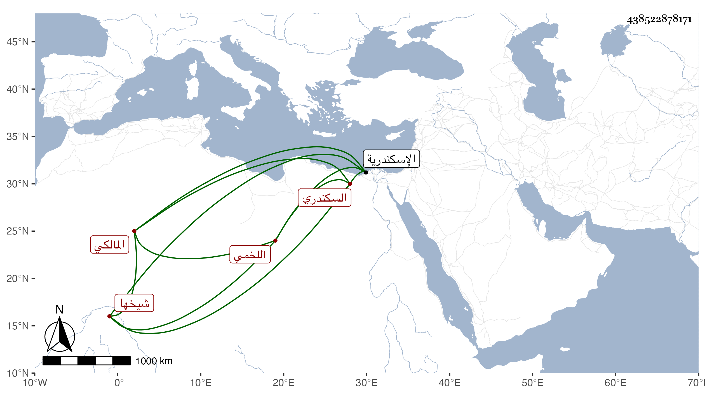

0902Sakhawi.DawLamic.ITO20230111-ara1.EIS1600.438522878171
Biography ID: 438522878171
أحمد بن صالح بن الحسن بن إبراهيم اللخمي السكندري شيخها المالكي . ولد سنة ثلاث وثلاثين وسبعمائة بالاسكندرية وسمع وهو كبير من العرضي لما قدمها عليهم بعد سنة ستين جامع الترمذي وحدث به عنه بسماعه من زينب بنة مكي وإجازته من الفخر على ابن البخاري بسندهما وكذا قرأ على يحيى بن أحمد بن محمد الملقي كما أثبته ابن الجزري في ترجمة يحيى إلى المفلحون قال شيخنا في معجمه أجاز لي في سنة ثمان وتسعين ، ومات بعد القرن . قلت قد تلا عليه السراج عمر بن يوسف البسلقوني في سنة سبع وثمانمائة بل وأخذ عنه الفقه أيضا وقال أنه قرأ على أبي عبد الله الأريسي القباقبي ، وذكره المقريزي في عقوده باختصار .
